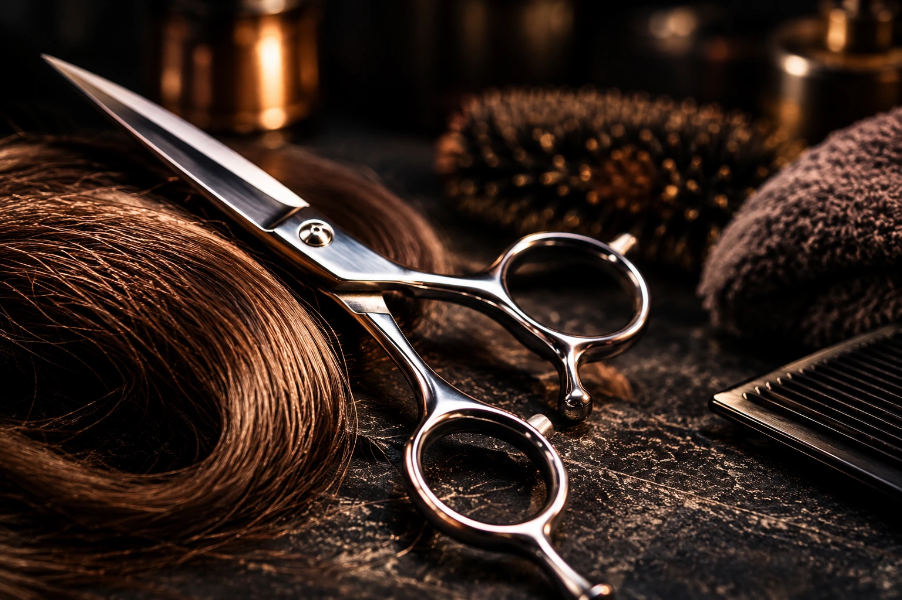
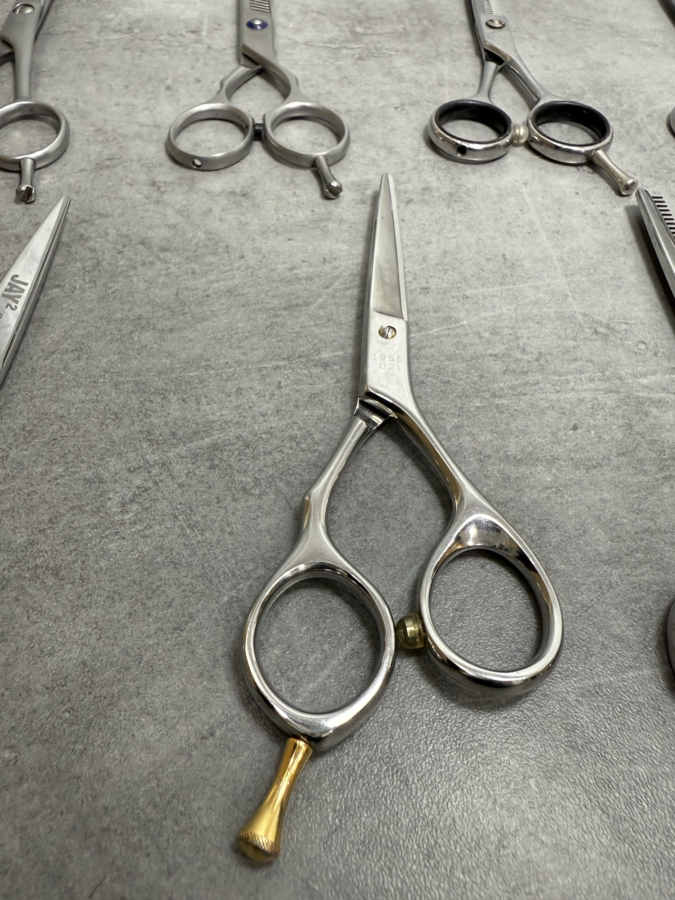

Afilado profesional
Afilado de tijeras de peluquería y barbería en Valencia
Afilado profesional de tijeras rectas, de entresacar y convex para peluquería y barbería.
Plazo según estado y carga del taller.
Rectas 17 € · De entresacar 19 € · De filo convexo 22 €
Qué puedes traer
- Tijeras profesionales de peluquería y barbería
- Tijeras clásicas rectas
- Tijeras de entresacar
- Tijeras convex
- Tijeras de grooming
Estado y límites del trabajo
El estado de las hojas y los afilados anteriores pueden limitar la recuperación. Consulta la pieza antes de dar por hecho que el afilado resolverá cualquier problema.
Una foto y una descripción del problema permiten empezar la consulta. La valoración de la pieza concreta es importante antes de confirmar una recuperación.
Precio y plazo
El plazo parte de 2 horas y depende del estado y de la carga del taller. Si traes varias piezas, consulta cuándo podrás recogerlas.
- Peluquería: rectas
- 17 €
- Peluquería: de entresacar
- 19 €
- Peluquería: de filo convexo
- 22 €
- Domésticas
- Desde 5 €
- Costura
- Desde 7 €
El trabajo según tu herramienta
Si las tijeras tiran del pelo, empujan el mechón en vez de cortarlo o dejan un corte irregular, conviene revisar el filo y el ajuste de las hojas.
El proceso puede incluir la preparación de piedras de agua, el afilado en máquina y el acabado en piedras. El trabajo se adapta al estado de las tijeras.
Otras tijeras: costura y uso doméstico
También se aceptan tijeras domésticas desde 5 € y de costura desde 7 €. En costura, el tamaño, la construcción y el estado influyen en el precio. Consulta las tijeras de grooming para conocer el importe.
Ver la prueba de corte
Prueba de corte de tijeras de peluquería
Prueba de corte sobre un mechón en el taller de Filo Fino.
Ver trabajos realesAntes de traer tu herramienta
Consulta el caso concreto si tienes dudas sobre el estado o el plazo.
¿Cuánto cuesta afilar unas tijeras de peluquería?
Las rectas cuestan 17 €, las de entresacar 19 € y las de filo convexo 22 €. Son precios fijos para estas categorías.
¿Cuándo puedo recogerlas?
El plazo es desde 2 horas. La preparación de piedras, el estado de las tijeras y la carga del taller pueden alargarlo.
¿Se aceptan tijeras de casa o de costura?
Sí. Las domésticas parten de 5 €. El afilado de tijeras de costura cuesta desde 7 €. El precio depende del tamaño, la construcción y el estado de las tijeras.
Calle Maestro Guerrero, 4 · Valencia
Tu herramienta.
Un taller en Valencia.
Consulta tu herramienta y el plazo por WhatsApp, o llámame antes de desplazarte.
Llamar al +34 614 00 50 53Guerrero, 4
Ver ubicación en Google Maps
- Lunes a viernes
- 10:00–14:00 / 17:00–20:00
- Fin de semana
- Consulta disponibilidad
Confirma el horario antes de desplazarte si necesitas una atención concreta.